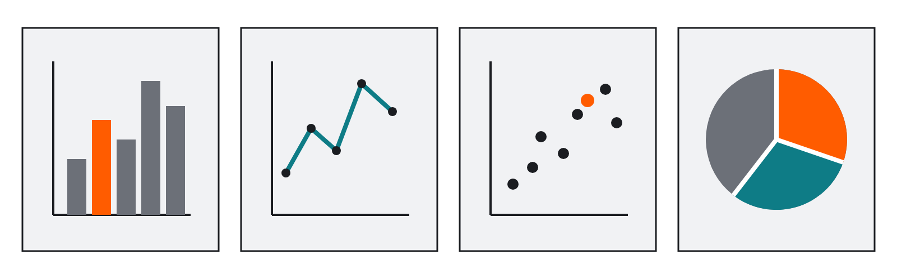
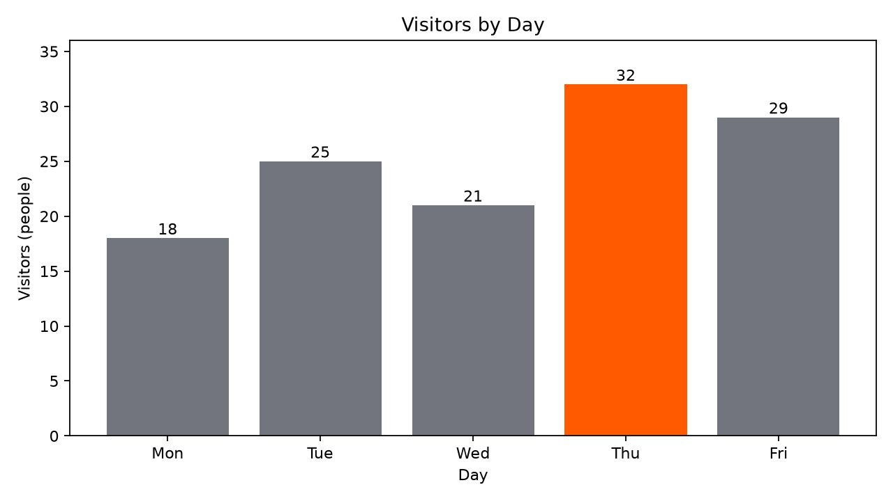
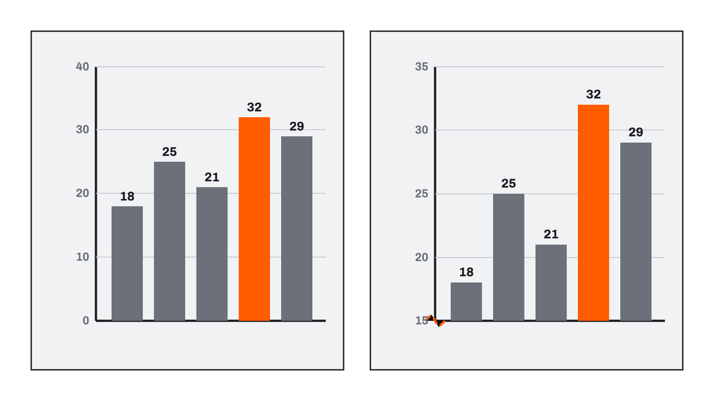

Matplotlib으로 그래프 이해하기 用 Matplotlib 理解图表
라이브러리는 이미 만들어진 기능의 묶음이다 库是已经做好的功能集合
그래프의 축·선·글자를 모두 직접 만들 필요는 없습니다. 특정 작업에 필요한 기능을 모아 다른 프로그램에서 사용할 수 있게 만든 것을 라이브러리라고 합니다. 无需亲手制作图表的轴、线与文字。把某类工作所需功能汇集起来供程序使用的东西叫库。
import matplotlib.pyplot as plt
Matplotlib은 Python에서 그래프를 그릴 때 널리 사용하는 라이브러리입니다. import는 이미 설치된 기능을 현재 코드에서 사용하겠다는 뜻입니다. Matplotlib 是 Python 中常用的绘图库。import 表示在当前代码中使用已安装的功能。
설치와 import는 다른 작업입니다. 학생은 함수를 외워 처음부터 코드를 쓰지 않고 AI가 만든 데이터·그래프 종류·제목·축을 확인합니다. 安装与 import 是不同操作。学生无需背函数从头写代码，而要检查 AI 生成的数据、图表类型、标题与坐标轴。
표는 정확한 값을, 그래프는 관계를 보기 좋다 表格适合读精确值，图表适合看关系
days = ["Mon", "Tue", "Wed", "Thu", "Fri"] visitors = [18, 25, 21, 32, 29]
| day day | visitors visitors |
|---|---|
| Mon | 18 |
| Tue | 25 |
| Wed | 21 |
| Thu | 32 |
| Fri | 29 |
두 리스트에서 같은 위치의 값이 한 쌍입니다. Mon과 18, Tue와 25가 함께 사용됩니다. 两个列表中相同位置的值是一对：Mon 与 18，Tue 与 25。
표와 그래프는 서로를 완전히 대신하지 않습니다. 表格与图表不能完全互相替代。
알고 싶은 질문에 따라 그래프 모양이 달라진다 图表类型取决于想回答的问题

| 알고 싶은 것 想知道什么 | 알맞은 그래프 合适图表 |
|---|---|
| 항목의 크기 비교 比较项目大小 | 막대그래프 柱状图 |
| 시간에 따른 변화 随时间变化 | 선그래프 折线图 |
| 두 수치의 관계 两个数值的关系 | 산점도 散点图 |
수행평가에서는 학생이 그래프 종류를 고르지 않습니다. 교사가 데이터별 그래프와 표시 조건을 지정합니다. 在表现评价中，学生不选择图表类型；教师会按数据指定图表与显示条件。
데이터와 완료 조건을 함께 요청한다 同时说明数据与完成条件 실습 实践
Jupyter Notebook에서 실행할 짧은 Python 코드를 작성해 줘. Matplotlib을 사용해 요일별 이용 인원을 막대그래프로 보여 줘. 요일: Mon, Tue, Wed, Thu, Fri 이용 인원: 18, 25, 21, 32, 29 - 가로축은 요일, 세로축은 이용 인원(명) - 세로축은 0에서 시작 - 제목과 축 이름 표시 - 원본 데이터는 바꾸지 않기
- 두 리스트가 원본과 같은가? 两个列表与原始数据一致吗？
- 막대그래프를 사용했는가? 使用了柱状图吗？
- 제목과 축 이름이 있는가? 有标题与轴名称吗？
- 세로축이 0에서 시작하는가? 纵轴从 0 开始吗？
그래프가 나타난 뒤 원본과 대조한다 图表出现后要与原始数据核对
sample/notebooks/04-1_matplotlib_graph.ipynb를 열고 준비된 셀을 위에서 아래로 실행합니다. 코드를 고치기보다 요청 조건과 원본 표가 그래프에 그대로 반영됐는지 확인합니다.打开 04-1_matplotlib_graph.ipynb 并从上到下运行单元。重点确认请求条件与原始表格是否正确反映在图表中。

- 막대가 다섯 개인가? 有五根柱吗？
- 높이가 18·25·21·32·29와 맞는가? 高度与 18、25、21、32、29 一致吗？
- 가장 높은 막대가 목요일인가? 最高的是星期四吗？
- 제목·축 이름·단위가 보이는가? 标题、轴名与单位可见吗？
- 세로축이 0에서 시작하는가? 纵轴从 0 开始吗？
코드가 실행되었다는 사실만으로 정확하다고 판단하지 않습니다. 그래프와 원본 데이터가 일치해야 합니다. 不能因为代码运行了就判断正确；图表必须与原始数据一致。
그래프는 사실을 자동으로 설명하지 않는다 图表不会自动解释事实

- 축을 높은 값에서 시작하면 작은 차이가 크게 보일 수 있다. 纵轴从较高数值开始，会让小差异看起来很大。
- 일부 기간만 고르면 전체 흐름과 다른 인상을 줄 수 있다. 只选部分时期，会产生不同于整体的印象。
- 단위와 출처가 없으면 숫자의 의미를 확인하기 어렵다. 没有单位与来源，就难以确认数字含义。
이 과목은 수학·데이터 분석 과목이 아닙니다. 깊은 통계 해석보다 요구한 그래프를 정확히 만들고 원본과 비교하는 것이 우선입니다. 本课不是数学或数据分析课。优先任务是按要求准确完成图表并与原始数据核对，而非深入统计解释。